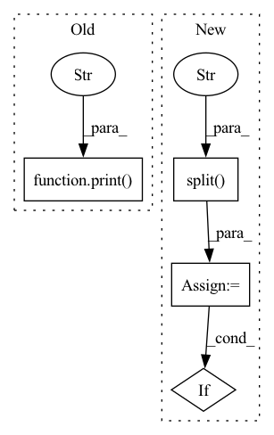

Pattern ID :11400
Before Change
redundant = False // second download option
try: // GitHub
url = f"https://github.com/{repo}/releases/download/{tag}/{name}"
print(f"Downloading {url} to {file}..." )
torch.hub.download_url_to_file(url, file)
assert file.exists() and file.stat().st_size > 1E6 // check
except Exception as e: // GCP
print(f"Download error: {e}")After Change
name = Path(urllib.parse.unquote(str(file))).name // decode "%2F" to "/" etc.
if str(file).startswith(("http:/", "https:/")): // download
url = str(file).replace(":/", "://") // Pathlib turns :// -> :/
name = name.split("?" ) [0] // parse authentication https://url.com/file.txt?auth...
safe_download(file=name, url=url, min_bytes=1E5)
return name
// GitHub assets
file.parent.mkdir(parents=True, exist_ok=True) // make parent dir (if required)
try:
response = requests.get(f"https://api.github.com/repos/{repo}/releases/latest").json() // github api
assets = [x["name"] for x in response["assets"]] // release assets, i.e. ["yolov5s.pt", "yolov5m.pt", ...]
tag = response["tag_name"] // i.e. "v1.0"
except: // fallback plan
assets = ["yolov5s.pt", "yolov5m.pt", "yolov5l.pt", "yolov5x.pt",
"yolov5s6.pt", "yolov5m6.pt", "yolov5l6.pt", "yolov5x6.pt"]
try:
tag = subprocess.check_output("git tag", shell=True, stderr=subprocess.STDOUT).decode().split()[-1]
except:
tag = "v5.0" // current release
if name in assets:
safe_download(file,
url=f"https://github.com/{repo}/releases/download/{tag}/{name}",
// url2=f"https://storage.googleapis.com/{repo}/ckpt/{name}", // backup url (optional)In pattern: SUPERPATTERN
Frequency: 4
Non-data size: 4
Instances Fragment ID: 38847584
Project Name: ultralytics/yolov5
Commit Name: f3c3d2ce5d85ba77336a9d0a87c6a446732cdda6
Time: 2021-06-08
Author: glenn.jocher@ultralytics.com
File Name: utils/google_utils.py
M Class Name: AnonimousClass
N Class Name: AnonimousClass
M Method Name: attempt_download(2)
N Method Name: attempt_download(2)
M Parent Class:
N Parent Class:
M File Name: utils/google_utils.py
N File Name: utils/google_utils.py
M Start Line: 21
M End Line: 59
N Start Line: 41
N End Line: 73
Before Change
redundant = False // second download option
try: // GitHub
url = f"https://github.com/{repo}/releases/download/{tag}/{name}"
print(f"Downloading {url} to {file}..." )
torch.hub.download_url_to_file(url, file)
assert file.exists() and file.stat().st_size > 1E6 // check
except Exception as e: // GCP
print(f"Download error: {e}")After Change
name = Path(urllib.parse.unquote(str(file))).name // decode "%2F" to "/" etc.
if str(file).startswith(("http:/", "https:/")): // download
url = str(file).replace(":/", "://") // Pathlib turns :// -> :/
name = name.split("?" ) [0] // parse authentication https://url.com/file.txt?auth...
safe_download(file=name, url=url, min_bytes=1E5)
return name
// GitHub assets
file.parent.mkdir(parents=True, exist_ok=True) // make parent dir (if required)
try:
response = requests.get(f"https://api.github.com/repos/{repo}/releases/latest").json() // github api
assets = [x["name"] for x in response["assets"]] // release assets, i.e. ["yolov5s.pt", "yolov5m.pt", ...]
tag = response["tag_name"] // i.e. "v1.0"
except: // fallback plan
assets = ["yolov5s.pt", "yolov5m.pt", "yolov5l.pt", "yolov5x.pt",
"yolov5s6.pt", "yolov5m6.pt", "yolov5l6.pt", "yolov5x6.pt"]
try:
tag = subprocess.check_output("git tag", shell=True, stderr=subprocess.STDOUT).decode().split()[-1]
except:
tag = "v5.0" // current release
if name in assets:
safe_download(file,
url=f"https://github.com/{repo}/releases/download/{tag}/{name}",
// url2=f"https://storage.googleapis.com/{repo}/ckpt/{name}", // backup url (optional) Fragment ID: 38847559
Project Name: fcakyon/yolov5-pip
Commit Name: 5afe85ae36145f9f3b511b2918b51566b7296f5d
Time: 2021-06-22
Author: 34196005+fcakyon@users.noreply.github.com
File Name: yolov5/utils/google_utils.py
M Class Name: AnonimousClass
N Class Name: AnonimousClass
M Method Name: attempt_download(2)
N Method Name: attempt_download(2)
M Parent Class:
N Parent Class:
M File Name: yolov5/utils/google_utils.py
N File Name: yolov5/utils/google_utils.py
M Start Line: 21
M End Line: 59
N Start Line: 41
N End Line: 73
Before Change
unzip all the zipped files in a directory
all_files = glob.glob(f"{self.ds_dir}/*.zip")
for f in all_files:
print(f"unziping {os.path.join(self.ds_dir, f)} to {os.path.join(self.ds_dir, f.split(".zip")[0])}" )
with zipfile.ZipFile(os.path.join(self.ds_dir, f), "r") as zip_ref:
zip_ref.extractall(os.path.join(self.ds_dir, f.split(".zip")[0]))
return
After Change
all_files = glob.glob(f"{self.ds_dir}/*.zip")
for f in all_files:
src = os.path.join(self.ds_dir, f)
trgt = os.path.join(self.ds_dir, f.split(".zip" ) [0])
if not os.path.exists(trgt):
print(f"unziping {src} to {trgt}")
with zipfile.ZipFile(os.path.join(self.ds_dir, f), "r") as zip_ref:
zip_ref.extractall(os.path.join(self.ds_dir, f.split(".zip")[0])) Fragment ID: 38847577
Project Name: atrcheema/ai4water
Commit Name: 5445cc5892161a9dd6913bfe95949a02bb3c6678
Time: 2021-02-03
Author: ather_abbas786@yahoo.com
File Name: dl4seq/utils/datasets.py
M Class Name: Datasets
N Class Name: Datasets
M Method Name: _unzip(1)
N Method Name: _unzip(1)
M Parent Class: object
N Parent Class: object
M File Name: dl4seq/utils/datasets.py
N File Name: dl4seq/utils/datasets.py
M Start Line: 94
M End Line: 97
N Start Line: 168
N End Line: 175